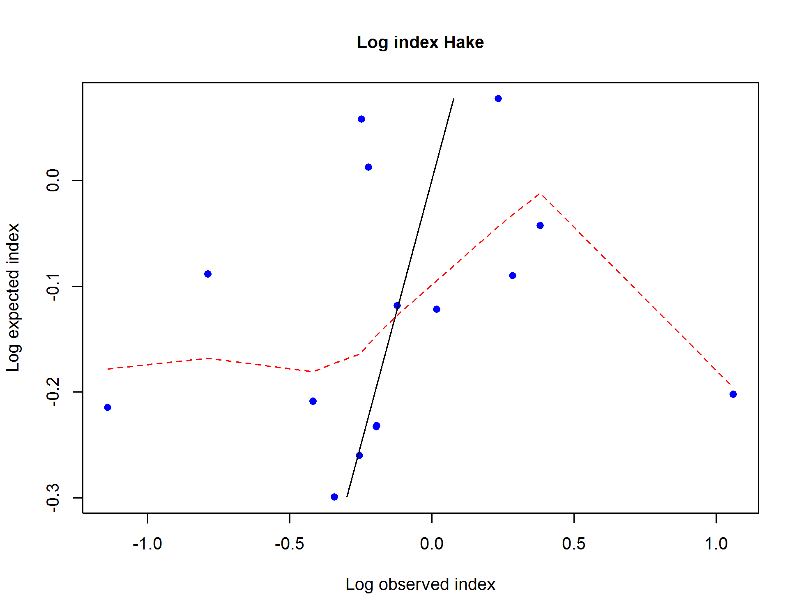
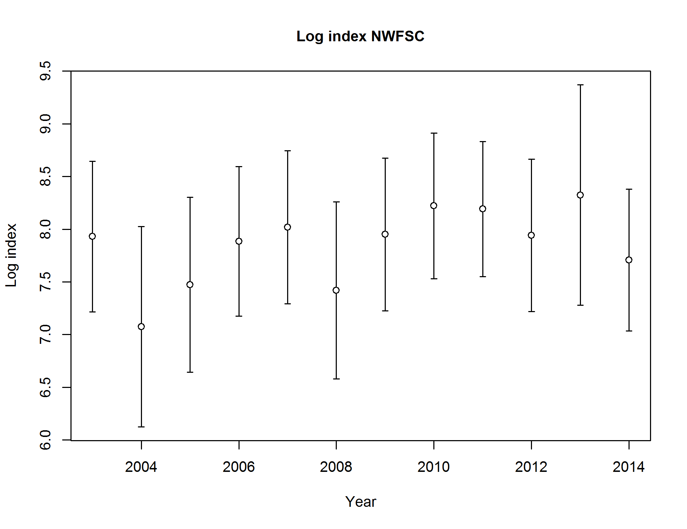

{kind=link}

Fit to index data for BottomTrawl
file: index2_cpuefit_BottomTrawl.png
Index data for BottomTrawl
file: index1_cpuedata_BottomTrawl.png
Fit to index data for BottomTrawl
file: index2_cpuefit_BottomTrawl.png
Observed vs. expected index values with smoother for BottomTrawl
file: index3_cpuecheck_BottomTrawl.png
Log index data for BottomTrawl
file: index4_logcpuedata_BottomTrawl.png
Fit to index data on log scale for BottomTrawl
file: index5_logcpuefit_BottomTrawl.png
log(observed) vs. log(expected) index values with smoother for BottomTrawl
file: index6_logcpuecheck_BottomTrawl.png

Index data for Hake
file: index1_cpuedata_Hake.png
Fit to index data for Hake
file: index2_cpuefit_Hake.png
Observed vs. expected index values with smoother for Hake
file: index3_cpuecheck_Hake.png
Log index data for Hake
file: index4_logcpuedata_Hake.png
Fit to index data on log scale for Hake
file: index5_logcpuefit_Hake.png

log(observed) vs. log(expected) index values with smoother for Hake
file: index6_logcpuecheck_Hake.png
Timeseries of catchability for Hake
file: index7_timevaryingQ_Hake.png
Catchability vs. vulnerable biomass for fleet Hake
This plot should illustrate curvature of nonlinear catchability relationship
Or reveal patterns associated with random-walk catchability
It was inspired by Jim Thorson, so blame him if you don't like it.
file: index8_Q_vs_Vuln_bio_Hake.png
Index data for JuvSurvey
file: index1_cpuedata_JuvSurvey.png
Fit to index data for JuvSurvey
file: index2_cpuefit_JuvSurvey.png
Observed vs. expected index values with smoother for JuvSurvey
file: index3_cpuecheck_JuvSurvey.png
Log index data for JuvSurvey
file: index4_logcpuedata_JuvSurvey.png
Fit to index data on log scale for JuvSurvey
file: index5_logcpuefit_JuvSurvey.png

log(observed) vs. log(expected) index values with smoother for JuvSurvey
file: index6_logcpuecheck_JuvSurvey.png
Index data for Triennial
file: index1_cpuedata_Triennial.png
Fit to index data for Triennial
file: index2_cpuefit_Triennial.png

Observed vs. expected index values with smoother for Triennial
file: index3_cpuecheck_Triennial.png
Log index data for Triennial
file: index4_logcpuedata_Triennial.png

Fit to index data on log scale for Triennial
file: index5_logcpuefit_Triennial.png
log(observed) vs. log(expected) index values with smoother for Triennial
file: index6_logcpuecheck_Triennial.png
Index data for NWFSC
file: index1_cpuedata_NWFSC.png
Fit to index data for NWFSC
file: index2_cpuefit_NWFSC.png
Observed vs. expected index values with smoother for NWFSC
file: index3_cpuecheck_NWFSC.png

Log index data for NWFSC
file: index4_logcpuedata_NWFSC.png
Fit to index data on log scale for NWFSC
file: index5_logcpuefit_NWFSC.png
log(observed) vs. log(expected) index values with smoother for NWFSC
file: index6_logcpuecheck_NWFSC.png
Index data for ForeignAtSea
file: index1_cpuedata_ForeignAtSea.png
Fit to index data for ForeignAtSea
file: index2_cpuefit_ForeignAtSea.png
Observed vs. expected index values with smoother for ForeignAtSea
file: index3_cpuecheck_ForeignAtSea.png

Log index data for ForeignAtSea
file: index4_logcpuedata_ForeignAtSea.png
Fit to index data on log scale for ForeignAtSea
file: index5_logcpuefit_ForeignAtSea.png
log(observed) vs. log(expected) index values with smoother for ForeignAtSea
file: index6_logcpuecheck_ForeignAtSea.png
Standardized indices overlaid
file: index9_standcpueall.png
{kind=link}
{kind=link}
{kind=link}
{kind=link}
{kind=link}
{kind=link}
{kind=link}
{kind=link}
{kind=link}
{kind=link}
{kind=link}
{kind=link}
{kind=link}
{kind=link}
{kind=link}
{kind=link}
{kind=link}
{kind=link}
{kind=link}
{kind=link}
{kind=link}
{kind=link}
{kind=link}
{kind=link}
{kind=link}
{kind=link}
{kind=link}
{kind=link}
{kind=link}
{kind=link}
{kind=link}
{kind=link}